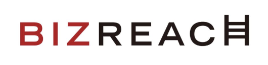
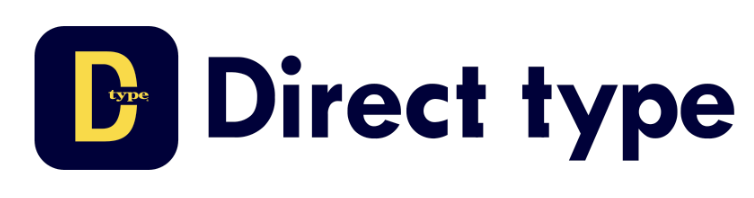
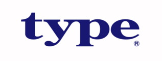
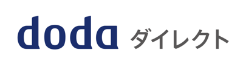
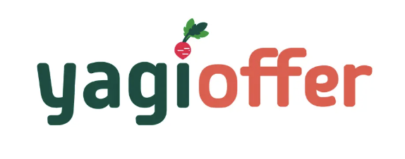
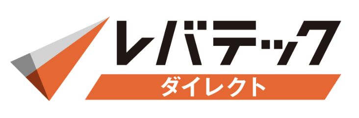
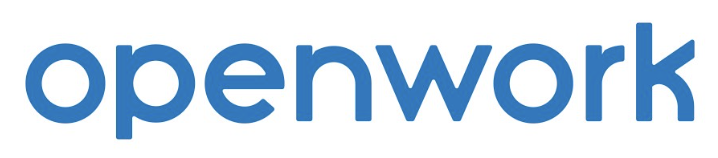
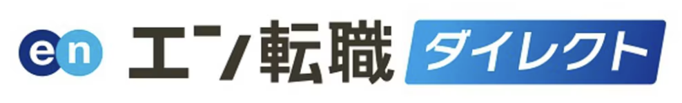
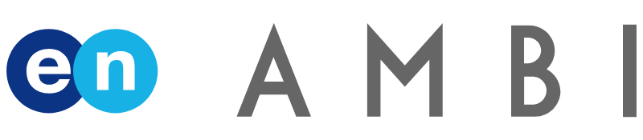

小売業・従業員120名
- 依頼した業務
- 応募者対応・日程調整
- 課題
- 店舗の責任者が応募の通知を確認しきれず、連絡が翌日以降になっていた
- RELIALが行ったこと
-
- 応募の通知先をRELIALに一本化
- 面接枠を事前に共有してもらい、初回連絡の時点で日程を確定
- 面接前日にリマインドを送信
月額採用代行サービス
媒体運用からスカウト、応募者対応まで。
採用実務を1つの業務から、月額10万円〜でお任せいただけます。
ご相談・お見積もりは無料です。オンライン30分ほどでお話を伺います。

RELIAL全体の実績
Challenges
Working cycle
方針はあるのに、動かす人が足りない。そんな企業の採用実務を引き受けます。
職種・予算・時期を伺い、使う媒体と進め方を決めます。
掲載・スカウト・応募者対応など、決めた業務をRELIALが担当します。
毎月、応募や面接の数字をご報告し、翌月の進め方をご提案します。
Support menu
相談したい行にチェックを入れると、選択内容を問い合わせフォームへ引き継ぎます。複数選択も可能です。
Cases
Pricing

月額10万円〜
担当業務・媒体数・対応件数・稼働量に応じて個別にお見積もりします。
Channels
求人広告、求人検索エンジン、ダイレクトリクルーティングなど、今お使いの媒体からご相談いただけます。











上記以外の媒体にも対応しています。
Getting started
ご希望を伺う
職種・媒体を確認
範囲と費用を提示
権限と原稿を確認
依頼業務を開始
毎月の結果を共有
FAQ
はい。媒体運用だけ、日程調整だけといったご依頼も承ります。
はい。今の契約や設定を確認したうえで、そのまま運用を引き継ぎます。
業務の内容や件数によって異なります。お見積もりの際に、対応する範囲と件数を明確にしてからご契約いただきます。
含まれません。媒体に支払う費用は、運用代行費とは分けてお見積もりします。
今お使いの媒体や採用管理システムを確認し、新たに費用が必要な場合は、ご契約前にご案内します。
はい。応募が増える時期に合わせて、依頼の範囲を変更できます。
初回のご連絡、日程調整、リマインドまでRELIALが担当します。合否の判断は貴社で行っていただきます。
はい。業界や職種を問わずご依頼いただけます。
毎月のご報告で、応募数・面接の設定率・スカウトの返信率などの数字を共有します。